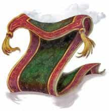
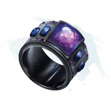
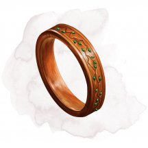
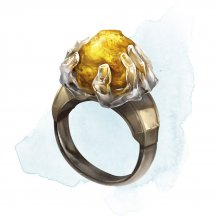
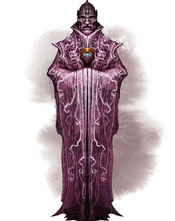
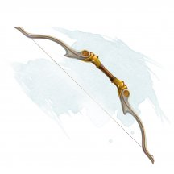
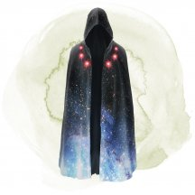
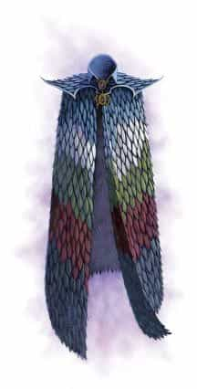

- Чудесный предмет, очень редкий
- Рекомендованная стоимость: 5 001-50 000 зм
Вы можете произнести действием командное слово, чтобы ковёр смог парить и летать. Он перемещается в сказанных вами вслух направлениях, при условии, что вы находитесь в пределах 30 футов от него. Существует четыре версии такого ковра. Мастер сам выбирает размер ковра или определяет его случайным образом.
к100 Размер Грузоподъёмность Скорость полёта 01-20 3 футов × 5 футов 200 фнт. 80 футов 21-55 4 футов × 6 футов 400 фнт. 60 футов 56-80 5 футов × 7 футов 600 фнт. 40 футов 81-100 6 футов × 9 футов 800 фнт. 30 футов Ковёр может поднять в два раза больший вес, чем тот, что указан в таблице, но при нагрузке больше расчётной его скорость уменьшается вдвое.
Магические предметы
Официальные материалы от Wizards of the Coast и от издательств, поддерживаемых этой компанией.
- Чудесный предмет, очень редкий
- Рекомендованная стоимость: 5 001-50 000 зм
Эта колода карт из плотной бумаги наполнена магией Стихийного Хаоса.
Магия колоды действует только в том случае, если карты взяты случайным образом (колода реальных игральных карт может имитировать колоду). Действием вы можете взять случайную карту из этой колоды и метнуть её, чтобы совершить дальнобойную атаку заклинанием, используя Ловкость для броска атаки. Дистанция карты 30 футов. При попадании она наносит 1к4 рубящего урона и накладывает магический эффект, определяемый её мастью, как подробно описано в таблице "Колода диких карт". Карта немедленно возвращается в колоду после того, как попадает или промахивается по цели.
Колода диких карт
к4 Масть Эффект 1 ♣ (Жезлы) Карта взрывается вспышкой огня. Цель и каждое существо в пределах 5 футов от неё должны совершить спасбросок Ловкости Сл 15, иначе получит 2к8 урона огнём. 2 ♦ (Монеты) Карта обращается полосами молний. Цель должна совершить спасбросок Ловкости Сл 15. При провале цель становится ослеплённой до конца вашего следующего хода, и каждое существо в пределах 10 футов от цели получает 1к6 урона электричеством. 3 ♥ (Чаши) Карта покрывает цель толстым слоем льда. Цель получает 1к10 урона холодом и должна преуспеть в спасброске Телосложения Сл 15, иначе станет опутанной до конца вашего следующего хода. 4 ♠ (Мечи) Карта издает пронзительный, оглушительный взрыв. Цель и каждое существо в пределах 5 футов от неё получают 1к6 урона силовым полем и должны преуспеть в спасброске Силы Сл 15, иначе упадут ничком.
- Чудесный предмет, очень редкий (требуется настройка)
- Рекомендованная стоимость: 5 001-50 000 зм
Рубашка карт этой колоды украшена замысловатыми узорами, представляющими различные планы существования. Колода имеет 6 зарядов. Удерживая её, вы можете израсходовать 1 или более его зарядов, чтобы использовать следующие свойства:
- Краплёная карта. Бонусным действием вы можете израсходовать 1 заряд, чтобы взять карту из колоды и положить её в незанятое пространство в пределах 5 футов от себя. После чего карта отмечается невидимым символом. Единожды, действием, в течение следующих 24 часов, вы можете произнести название отмеченной карты и телепортироваться к местоположению карты вместе с любым снаряжением, которое вы носите, появляясь в ближайшем незанятом пространстве к карте. После того, как вы телепортируетесь таким образом или спустя 8 часов, карта возвращается в колоду, и метка на ней исчезает.
- Риффлинг порталов. Действием вы можете израсходовать 3 заряда для наложения заклинания магические врата [arcane gate] с помощью колоды. Колода рассыпается, а парящие карты создают портальный круг заклинания. Когда заклинание заканчивается, колода снова появляется в вашем распоряжении.
- Перетасовывающая поступь. Бонусным действием вы можете израсходовать 1 заряд, чтобы метнуть карту из колоды в незанятое пространство в пределах 60 футов и телепортироваться туда вместе с любым снаряжением, которое на вы несёте или носите с собой. После чего карта исчезает и возвращается в колоду.
Колода восстанавливает 1к6 израсходованных зарядов ежедневно на рассвете.
- Чудесный предмет, очень редкий
- Рекомендованная стоимость: 5 001-50 000 зм
Серебряный колокольчик покрыт выгравированными на нем магическими символами. Пока вы держите колокольчик, действием вы можете наложить заклинание изгнание [banishment] (Сл спасброска 20). Если цель заклинания имеет 50 хитов или меньше, то она автоматически проваливает спасбросок. После того, как колокольчик был использован для наложения заклинания, он не может быть использован таким образом до следующего рассвета.
- Кольцо, очень редкое (требуется настройка)
- Рекомендованная стоимость: 5 001-50 000 зм
Это кольцо вырезано из гематита и украшено гравировкой руны «Друг».
Когда вы впервые настраиваетесь на это кольцо, вы можете прикоснуться к одному согласному существу и создать магическую связь между вами. Пока действует эта связь, всякий раз, когда вы подвергаетесь эффекту заклинания или магическому эффекту, восстанавливающему хиты, связанное существо также получает преимущества заклинания или эффекта.
Вы можете связаться с другим существом всякий раз, когда оканчиваете продолжительный отдых, при условии, что вы можете прикоснуться к существу, и оно желает этого.
Существо может получить выгоду только от одного кольца дружелюбия одновременно. Связь прекращается, если либо вы, либо существо отправляетесь на другой план существования, если вы связываете себя с другим существом в конце продолжительного отдыха или если вы разрываете связь бонусным действием.
Пробуждение руны. Когда связанное существо поражает цель броском атаки, вы можете реакцией пробудить руну кольца, если вы находитесь в пределах 60 футов от связанного существа. Затем атака связанного существа превращается в критический удар.
После того, как руна была пробуждена, она не может быть пробуждена снова до следующего рассвета.
- Кольцо, очень редкое (требуется настройка)
- Рекомендованная стоимость: 5 001-50 000 зм
По всему кольцу проходит полоса руидия. Надев кольцо, вы получаете следующие преимущества:
- Вы можете дышать под водой;
- Вы получаете скорость плавания, равную вашей скорости ходьбы.
Руидиевая ярость. Бонусным действием вы можете использовать кольцо, чтобы получить следующие преимущества, которые длятся в течение 1 минуты или до тех пор, пока вы не станете недееспособны:
- Вы получаете преимущество на проверки и спасброски Силы;
- Когда вы попадаете атакой, вы можете добавить свой бонус мастерства к броску урона;
- Труднопроходимая местность не требует от вас дополнительных перемещения, и вы невосприимчивы к состояниям парализованный и опутанный.
Вы не можете использовать это свойство кольца снова, пока не закончите продолжительный отдых.
Руидиевая порча. Когда вы используете свойство кольца "Руидиевая ярость", вы должны совершить спасбросок Харизмы Сл 20. При провале вы получаете 1 степень истощения. Если вы ещё не страдаете от руидиевой порчи, вы становитесь подвержены ей, после того, как проваливаете этот спасбросок.
Если руидий будет уничтожен. Если Апофеон убит или освобождён, весь руидий в Экзандрии мгновенно уничтожается, а кольцо красной ярости становится кольцом свободных действий [ring of free action].

- Кольцо, очень редкое (требуется настройка ночью на открытом воздухе)
- Рекомендованная стоимость: 5 001-50 000 зм
Нося это кольцо в области тусклого света или темноте, вы можете неограниченно действием накладывать им пляшущие огоньки [dancing lights] или свет [light].
У кольца есть 6 зарядов для использования описанных ниже свойств. Кольцо ежедневно восстанавливает 1к6 зарядов на рассвете.
Огонь фей. Вы можете действием потратить 1 заряд, чтобы наложить кольцом огонь фей [faerie fire].
Шаровая молния. Вы можете действием потратить 2 заряда, чтобы создать кольцом от одной до четырёх шаровых молний диаметром 3 фута. Чем больше шаров вы создадите, тем менее эффективен каждый из них.
Каждый шар появляется в свободном пространстве, видимом вами в пределах 120 футов. Шары существуют, пока вы концентрируетесь (как при концентрации на заклинании), но не более 1 минуты. Каждый шар испускает тусклый свет в радиусе 30 футов.
Вы можете бонусным действием переместить каждый шар на расстояние до 30 футов, но не более чем на 120 футов от себя. Если какое-нибудь существо кроме вас оказывается в пределах 5 футов от шара, шар выпускает в него разряд молнии и исчезает. Это существо должно совершить спасбросок Ловкости Сл 15. При провале существо получает урон электричеством, зависящий от количества созданных вами шаров.
Шары Урон электричеством 4 2к4 3 2к6 2 5к4 1 4к12 Падающие звёзды. Вы можете действием потратить от 1 до 3 зарядов. За каждый потраченный заряд вы выпускаете из кольца по одному светящемуся шарику в точку, которую видите в пределах 60 футов. Все существа в пределах 15-футового куба, исходящего из этой точки, покрываются искрами и должны совершить спасбросок Ловкости Сл 15, получая 5к4 урона огнём при провале или половину урона при успехе.

- Кольцо, очень редкое (требуется настройка)
- Рекомендованная стоимость: 5 001-50 000 зм
Нося это кольцо, вы восстанавливаете 1к6 хитов каждые 10 минут, при условии, что у вас есть хотя бы 1 хит. Если вы теряете часть тела, кольцо отращивает её и возвращает функциональность через 1к6 + 1 день, если всё это время у вас есть хотя бы 1 хит.

- Кольцо, очень редкое (требуется настройка)
- Рекомендованная стоимость: 5 001-50 000 зм
Нося это кольцо, вы можете неограниченно накладывать заклинание телекинез [telekinesis], но нацеливаясь только на предметы, которые никто не несёт и не носит.

- Чудесный предмет, очень редкий (требуется настройка Гуманоидом)
- Рекомендованная стоимость: 5 001-50 000 зм
Тайные Лорды Глубоководья облачаются в этот комплект одежды при встрече друг с другом. Благодаря одеянию, каждый лорд становится неотличим от других. Комплект состоит из трёх элементов: шлема, амулета и мантии – если надевать вместе, они считаются единым магическим предметом, но только в пределах Глубоководья и её канализации.
Вы настраиваетесь на комплект как на единственный предмет.
Шлем Лорда. Этот крупный шлем прикрывает вашу голову и скрывает лицо. Благодаря глазницам в шлеме ваша личность останется загадкой, но при этом вы можете хорошо видеть. Пока шлем надет, ваш голос магическим образом звучит так, что невозможно определить пол, и вы становитесь невосприимчивым к магии, позволяющей другим существам: читать ваши мысли, определять правдивость ваших слов, мировоззрение или ваш тип существа. Существа могут телепатически общаться с вами только с вашего позволения.
Амулет Лорда. На амулет нанесён герб Глубоководья. Он действует подобно амулету защиты от обнаружения и поиска [amulet of proof against detection and location].
Мантия Лорда. Изысканная мантия, действующая как кольцо свободных действий [ring of free action], создающая иллюзию того, что вы неопределенный, лишенный явных половых признаков гуманоид ростом в 6 футов.
- Оружие (копьё, метательное копьё), очень редкое (требуется настройка)
- Рекомендованная стоимость: 5 001-50 000 зм
Вы получаете бонус +2 к броскам атаки и урона, совершённым этим магическим оружием. Когда вы метаете его, его нормальная и максимальная дальность увеличиваются на 30 футов, и оно наносит одну дополнительную кость урона при попадании. После того, как вы метаете его и оно попадает или промахивается, копье немедленно возвращается в вашу руку.
Проклятие. Это оружие проклято, и если вы настроитесь на него, проклятие распространится и на вас. Пока проклятие не будет снято при помощи заклинания снятие проклятия [remove curse] или подобной магией, вы не хотите расставаться с оружием, постоянно держа его в пределах видимости. Пока вы настроены на это оружие, вы совершаете с помехой все броски атаки другим оружием.
Каждый раз, когда вы выбрасываете «1» на кости атаки, используя это оружие, оружие изгибается или летит, чтобы ударить вас в спину. Совершите новый бросок атаки с преимуществом против вашего КД. Если результат-попадание, то вы получаете урон, как если бы вы атаковали себя копьем.
- Чудесный предмет, очень редкий (требуется настройка)
- Рекомендованная стоимость: 5 001-50 000 зм
Пока вы носите эту адамантиновую корону, вы совершаете спасброски Интеллекта, Мудрости и Харизмы с преимуществом, а также вы получаете сопротивление урону психической энергией.
- Чудесный предмет, очень редкий
- Рекомендованная стоимость: 5 001-50 000 зм
Этот громоздкий костюм, полностью закрывающий ваши тело и голову, надевается и снимается за 1 минуту. Пока он надет, то позволяет вам дышать в безвоздушной среде и даёт вам иммунитет к вредному воздействию любого окружающего вас газа. Кроме того, под водой костюм даёт вам скорость плавания, равную вашей скорости ходьбы, а в среде без гравитации — скорость полёта, равную вашей скорости ходьбы.
- Чудесный предмет, очень редкий (требуется настройка друидом или колдуном)
- Рекомендованная стоимость: 5 001-50 000 зм
На железных боках этого Крошечного горшка тиснением изображены героические эпизоды. Вы можете использовать котёл в качестве заклинательной фокусировки для ваших заклинаний, и он функционирует как подходящий компонент для заклинания наблюдение [scrying]. Когда вы заканчиваете продолжительный отдых, вы можете создать зелье большого лечения [potion of greater healing] с помощью котла. Зелье теряет свою магию, если не будет использовано в течение 24 часов.
Действием вы можете заставить котёл увеличиться до размеров, достаточных, чтобы Среднее существо могло залезть внутрь. Вы можете действием вернуть котёл к его нормальному размеру, что безвредно выпихнет всё, что не помещается внутри, в ближайшее свободное пространство.
Если вы поместите труп гуманоида в котёл и накроете его 200 фунтами соли (стоящей 10 зм) по крайней мере на 8 часов, соль будет израсходована, а существо вернётся к жизни, как от действия заклинания оживление [raise dead], на следующем рассвете. Это свойство не может быть использовано вновь в течение следующих 7 дней.
- Чудесный предмет, очень редкий (требуется настройка волшебником)
- Рекомендованная стоимость: 5 001-50 000 зм
Гравированная хрустальная сфера размером с грейпфрут слабо гудит и пульсирует нерегулярными вспышками внутреннего света. Когда вы касаетесь кристалла, вы можете извлекать и хранить информацию и заклинания в кристалле одновременно с чтением и письмом. Найденный кристалл содержит следующие заклинания: крепость интеллекта [intellect fortress], ментальная связь Рэри [Rary’s telepathic bond], обнаружение мыслей [detect thoughts], послание [sending], психическая плеть Таши [Tasha’s mind whip], телекинез [telekinesis] и Тензеров парящий диск [Tenser’s floating disk]. Он функционирует для вас как книга заклинаний, заклинания и другие записи в которой психически закодированы.
Пока вы держите кристалл, вы можете использовать его в качестве заклинательной фокусировки для ваших заклинаний волшебника и знаете заговоры волшебная рука [mage hand], расщепление разума [mind sliver] и сообщение [message], если не знаете их без использования кристалла.
Кристалл имеет 3 заряда и ежедневно восстанавливает 1к3 заряда на рассвете. Вы можете использовать заряды следующими способами, пока держите кристалл:
- Если вы потратите 1 минуту на изучение информации в кристалле, вы можете израсходовать 1 заряд и заменить одно из своих подготовленных заклинаний волшебника на другое заклинание из книги.
- Когда вы накладываете заклинание волшебника, вы можете потратить 1 заряд, чтобы наложить заклинание без вербальных, соматических и материальных компонентов стоимостью до 100 зм.
- Оружие (секира), очень редкое (требуется настройка)
- Рекомендованная стоимость: 5 001-50 000 зм
Вы получаете бонус +2 к броскам атаки и урона, совершённым этим магическим топором. Топор дополнительно наносит 1к6 урона некротической энергией, всем кроме конструктов и нежити. Если вы уменьшаете хиты существа до 0 атакой совершённой с помощью этого топора, вы получаете 10 временных хитов.
Этот топор выкован из тёмного ржавого металла и когда-то принадлежал голиафу-варвару Грогу Стронгджо из «Vox Machina».

- Доспех (латы), очень редкий
- Рекомендованная стоимость: 5 001-50 000 зм
Пока вы носите этот доспех, вы получаете бонус +2 к КД. Кроме того, если некий эффект перемещает вас по земле против вашей воли, вы можете реакцией уменьшить расстояние, на которое вас переместят, на расстояние до 10 футов.
- Чудесный предмет, очень редкий (требуется настройка)
- Рекомендованная стоимость: 5 001-50 000 зм
Это средство передвижения является лодкой шириной в 10 футов и длиной в 30 футов. У нее есть четыре гусиных лапки, которые позволяют ей передвигаться как по суше, так и по воде. Скорость ходьбы и плавания составляет 20 футов, но она не может передвигаться под водой. Лодка движется в соответствии с отданными вами командами, а существа по вашему выбору получают бонус +1 к КД, пока находятся внутри.
Лодка может беспрепятственно перевозить до 1 000 фунтов. Она способна выдержать вес вдвое больше, но при этом будет двигаться с половинной скоростью, если перевозит больше своей нормы.

- Оружие (длинный лук), очень редкое (требуется настройка)
- Рекомендованная стоимость: 5 001-50 000 зм
Когда вы натягиваете тетиву этого лука, он шепчет на Эльфийском языке: «Несу смерть врагам». Если вы используете это оружие для совершения дальнобойной атаки, вы можете сказать командную фразу: «Смерть презревшему меня». Цель вашей атаки становится вашим заклятым врагом, пока не умрёт, или пока не наступит рассвет по прошествии семи дней. У вас может быть только один заклятый враг одновременно. Если ваш заклятый враг умирает, вы можете выбрать нового после следующего рассвета.
Если вы совершаете бросок дальнобойной атаки по заклятому врагу, вы совершаете его с преимуществом. Кроме того, цель не получает преимуществ от укрытия, кроме полного укрытия, и вы не получаете штраф за совершение атаки на расстояние, превышающее обычную дистанцию. Если атака попадает, заклятый враг дополнительно получает 3к6 колющего урона.
Пока ваш заклятый враг жив, вы совершаете с помехой броски атаки всем другим оружием.
- Оружие (любой лук), очень редкое (требуется настройка)
- Рекомендованная стоимость: 5 001-50 000 зм
Этот лук имеет несколько струн и напоминает лиру или небольшую арфу. Играя по струнам во время вставки стрелы в лук, вы наполняете стрелу магией.
Вы можете сыграть одну из следующих мелодий, когда используете лук для совершения дальнобойной атаки оружием. Вы должны сделать это до того, как сделаете бросок атаки, и вы можете сыграть только одну мелодию за атаку.
Мелодия точности. Если вы владеете Выступлением, вы получаете бонус +1 к броску атаки. Если у вас есть компетентность в Выступлении, вместо этого вы получаете бонус +2 к атаке.
Мелодия реверберации. Мелодия, которую вы играете, звучит громко. При попадании цель получает дополнительный урон звуком, равный вашему модификатору Харизмы.
- Чудесный предмет, очень редкий
- Рекомендованная стоимость: 5 001-50 000 зм
Эта Большая пушка наполнена магией. Он не требует боеприпасов и не нуждается в зарядке. Требуется одно Действие, чтобы прицелиться из пушки, и одно Действие, чтобы выстрелить. После того, как она выстрелит, ей необходимо перезаряжаться в течение 5 минут, прежде чем из неё можно будет выстрелить снова.
Существо, стреляющее из пушки, выбирает один из следующих эффектов:
Струя кислоты. Пушка выпускает линию кислоты длиной 300 футов и шириной 5 футов. Каждое существо на этой линии должно совершить спасбросок Ловкости Сл 15, получая 22 (4к10) урона кислотой при провале или вдвое меньше урона при успехе. Кроме того, существо, которое проваливает свой спасбросок, получает 11 (2к10) урона кислотой в начале каждого своего хода; существо может закончить этот урон, используя своё действие, чтобы смыть кислоту пинтой и более воды.
Струя огня. Пушка выпускает линию огня длиной 300 футов и шириной 5 футов. Каждое существо на этой линии должно совершить спасбросок Ловкости Сл 15, получая 33 (6к10) урона огнём при провале или вдвое меньше урона при успехе. Огонь поджигает горючие предметы, которые никто не несёт и не носит.
Ледяной выстрел. Пушка выстреливает ледяным шаром в точку, которую вы можете видеть в пределах 1200 футов от пушки. После чего шар расширяется, образуя сферу радиусом 30 футов с центром выбранной точке. Каждое существо в этой области должно совершить спасбросок Телосложения Сл 15. При провале существо получает 22 (4к10) урона холодом и его скорость в течении 1 минуты уменьшена на 10 футов. При успехе существо получает вдвое меньше урона, и его скорость не уменьшается. Существо, скорость которого уменьшена благодаря этому эффекту, может повторять спасбросок в конце каждого своего хода, завершая эффект на себе в случае успеха.
Выстрел молнией. Пушка стреляет молниевым шаром в точку, которую вы можете видеть в пределах 1200 футов от пушки. Затем молния расширяется, образуя сферу радиусом 20 футов с центром выбранной точке. Каждое существо в этой области должно совершить спасбросок Ловкости Сл 15, получая 33 (6к10) урона электричеством при провале или вдвое меньше урона при успехе. Существа, облачённые в металлический доспех, совершают спасбросок с помехой.
Ядовитые брызги. Пушка выпускает ядовитый газ в 60-футовом конусе. Каждое существо в этой области должно совершить спасбросок Телосложения Сл 15. При провале существо получает 22 (4к10) урона ядом и становится отравленным на 1 минуту. При успехе существо получает вдвое меньше урона и не отравляется. Отравленное таким образом существо может повторять спасбросок в конце каждого своего хода, при успехе заканчивая эффект на себе.

- Чудесный предмет, очень редкий (требуется настройка)
- Рекомендованная стоимость: 5 001-50 000 зм
Эта чёрная или тёмно-синяя мантия украшена белыми или серебристыми звёздочками. Вы получаете бонус +1 к спасброскам, пока носите её.
Шесть звёзд, расположенные на груди, отличаются увеличенным размером. Если вы носите эту мантию, вы можете действием оторвать одну из звёзд и использовать её для наложения заклинания волшебная стрела [magic missile] как заклинание 5-го уровня. Каждый день на закате на мантии заново появляются 1к6 звёзд.
Пока вы носите эту мантию, вы можете действием перейти на Астральный План вместе со всем, что вы несёте и носите. Вы остаётесь там, пока не вернётесь действием на план, на котором вы были. Вы появляетесь в пространстве, которое занимали ранее, или ближайшем пространстве, если прошлое место занято.
- Чудесный предмет, очень редкий (требуется настройка)
- Рекомендованная стоимость: 5 001-50 000 зм
Этот толстый плащ с меховой подкладкой имеет руну «Мороз», вышитую на подоле серебристо-синей нитью. Холодный ветер кружит вокруг плаща независимо от погоды.
Пока вы носите этот плащ, вы получаете сопротивление урону холодом. Кроме того, когда вы двигаетесь в пределах 5 футов от существа, вы можете заставить холодный ветер плаща ударить существо. Существо должно преуспеть в спасброске Ловкости Сл 14, иначе оно получит 1к6 урона холодом и упадёт ничком. Существо может быть затронуто мантией только один раз за ход.
Пробуждение руны. Действием вы можете пробудить руну мантии, чтобы наложить ею заклинание метель [sleet storm] (Сл спасброска 14). Когда вы используете мантию для накладывания заклинания, область действия заклинания не является для вас труднопроходимой местностью и вы можете видеть сквозь метель, игнорируя обычные штрафы за сильно заслонённую местность.
После того, как руна была пробуждена, она не может быть пробуждена снова до следующего рассвета.

- Чудесный предмет, очень редкий (требуется настройка)
- Рекомендованная стоимость: 5 001-50 000 зм
У этой мантии 3 заряда, и она ежедневно восстанавливает 1к3 заряда на рассвете. Пока вы её носите, вы можете действием потратить 1 заряд, чтобы на ней появился до конца вашего следующего хода узор из завораживающих оттенков. В это время мантия испускает яркий свет в пределах 30 футов и тусклый свет в пределах ещё 30 футов. Существа, видящие вас, совершают по вам броски атаки с помехой. Кроме того, когда свойство мантии активируется, все существа в области яркого света, видящие вас, должны преуспеть в спасброске Мудрости Сл 15, иначе они станут ошеломлёнными до окончания эффекта.
- Чудесный предмет, очень редкий (требуется настройка)
- Рекомендованная стоимость: 5 001-50 000 зм
Пока вы носите этот крылатый шлем, вы получаете скорость полёта 60 футов. Кроме того, вы получаете преимущество на броски инициативы.